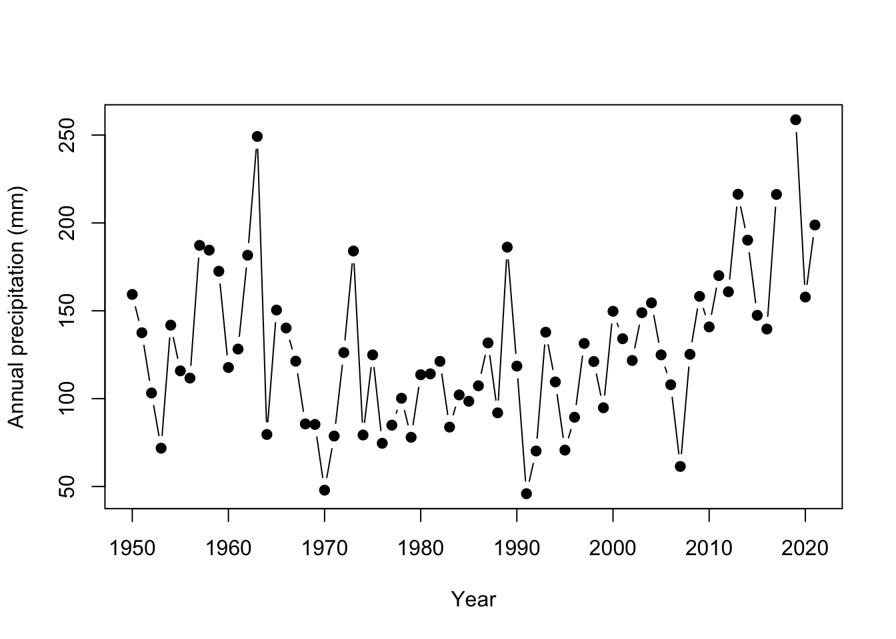
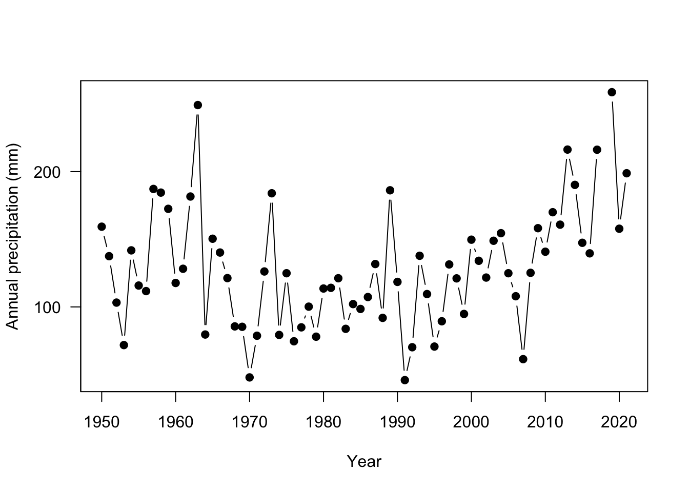
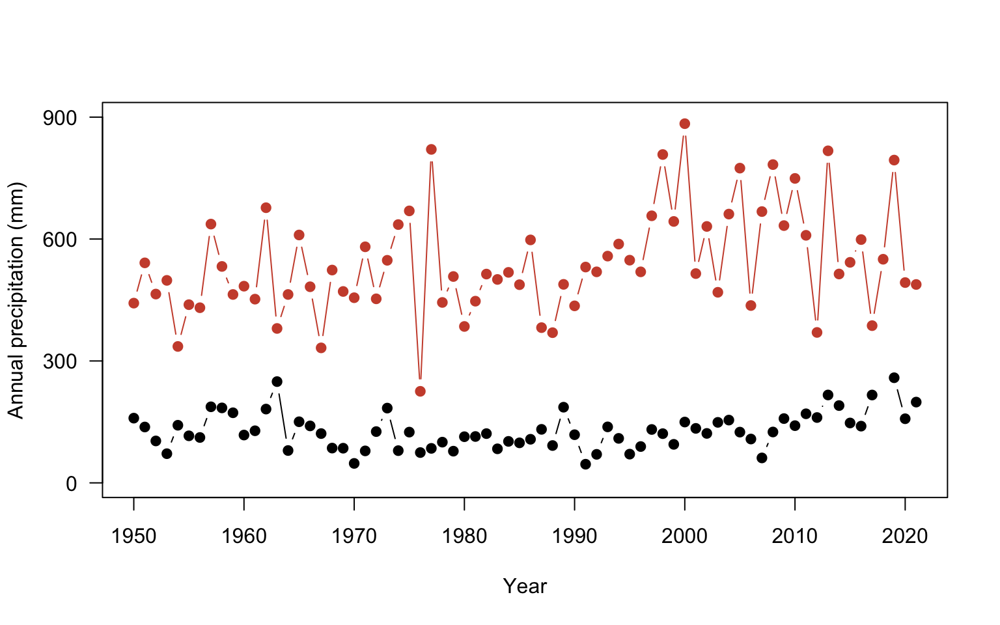
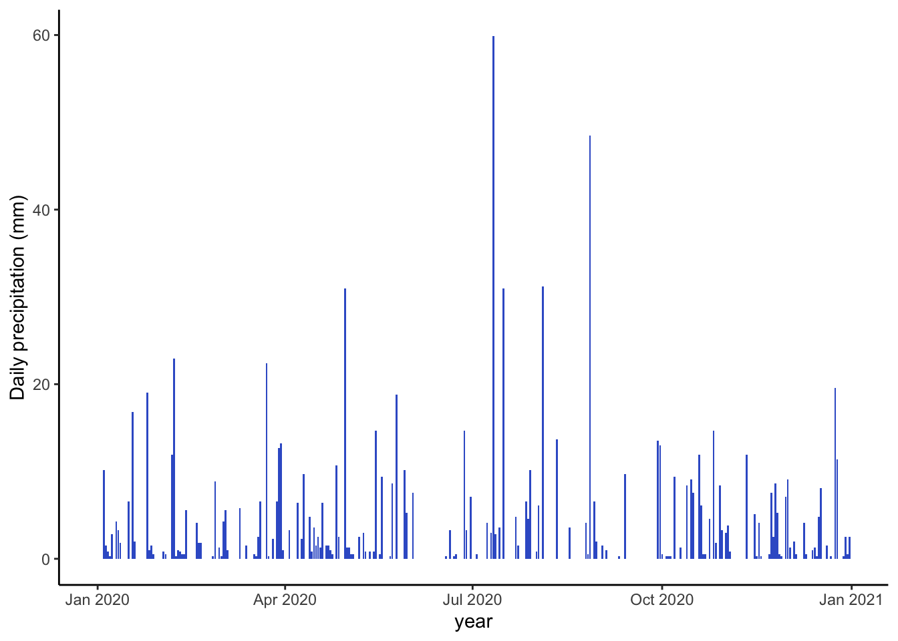

Chapter 4 Visualizing data
by Heather Kropp for ENVST 206: Introduction to Environmental Data Hamilton College
4.1 Learning objectives
- Fundamentals of plotting data
- Plotting data in base R
- Learn about different visualization techniques in ggplot2
- Characterize climate and weather data graphically
4.3 Fundamentals of plotting data
Visualizing data requires careful consideration of the audience and representation of the data. Many aesthetics and graphic design principles can aid in making engaging and accurate visualizations. There are several main principles to consider in visualizing data:
4.3.1 1. Representation of data
The representation of data will depend on the type of data (categorical, discrete, proportion, numerical, etc.) and the uncertainty associated with the data. Keep in mind, uncertainty may be related to measurement error or simply showing the variation or spread of the data. The type of data influences the type of graph that can be used. Below are a few examples of the underlying representation of data and associated error or variation.
The choice in plot will depend on the representation of uncertainty or variation (error bars, quantile boxplot), independence or ordering of variables (line versus scatter), and the type of observations such as categorical versus numerical data (barplot, mosaic, pie).
4.3.2 2. Layout
The layout describes all of the features and arrangement of the graph including labeling, axes range, the main graph frame. The objects included for both labeling and the physical centering and balance of the elements can all fall under layout.

4.3.3 3. Encoding
Encoding deals with the symbolization and representation of data. This can be related to colors, size of points or boxes, line weight, shading, or transparency. For encoding, you will want to consider aspects such as intuitive interpretation, accessibility, and cultural meaning.
In the above graph, colors are similar to the objects in the data and the point size represents large/small values. These types of intuitive encoding help with interpretation. However, for a broad audience, color-blind friendly and high contrast color may be more favorable over colors associated with objects or meaning. You will want to choose colors that will avoid confusion with other associations (like red colors for low values). You should also keep in mind that there are limitations in the number of hues that can be readily related to a number or object by most people. This means that encoding data via shading or hue can communicate general patterns for a large range of hue values, but does not offer the more accurate assessment that position or length can convey.
4.3.4 4. Simplicity
Too many colors, crowded points, complex shapes, and overlapping text all hamper the interpretation of data. In many contexts, there can be a lot of information to convey in a limited amount of space and audience attention span. Visualization often requires coordinating with text and the venue for the visualization to narrow in on the main focus and key takeaways from the visualization. Effective titles and labels can also play a role in visualization.
4.4 Plotting data in base R
Plots are one of the most useful tools for visualizing weather patterns and long term climate trends. We will work with the NOAA weather data from Chapter 3 to get more comfortable with making plots in R.
# read in data
# cloud is always lowercase
datW <- read.csv("/cloud/project/noaa_weather/weather_data.csv")It can be helpful to set up a vector of the station names for easy reference. Working with station names as factors instead of characters often works better in some plotting functions. The as.factor function can convert the data. With this function, you can reassign the vector names as factors instead of characters. The levels function allows you to view each unique station name.
# specify that the name column should be a factor
datW$NAME<- as.factor(datW$NAME)
# set up a vector of all names for each level
nameS <- levels(datW$NAME)
nameS[1] "ABERDEEN, WA US"
[2] "BARROW AIRPORT, AK US"
[3] "FARGO HECTOR INTERNATIONAL AIRPORT, ND US"
[4] "PHOENIX AIRPORT, AZ US"
[5] "STILLWATER RESERVOIR, NY US"
[6] "SYRACUSE HANCOCK INTERNATIONAL AIRPORT, NY US"Let’s start by taking a closer look at precipitation at each site. Just as you did in the previous chapter, totaling the precipitation that occurred in a year using the summarise and group_by function and sum will allow you to examine total annual precipitation. However, you want to avoid years with too many missing observations. In most cases involving missing observations, annual precipitation will be biased lower than the actual values of precipitation that fell.
It can be helpful to remove the NAs to sum the precipitation observations and account for the number of observations with real data. You will want to start by putting precipitation in a separate data frame and omitting NAs using the na.omit function. This will omit any row of data with an NA in it.
# remove NA using na.omit
precipSub <- data.frame(NAME=datW$NAME,
YEAR=datW$YEAR,
PRCP=datW$PRCP)
datP <- na.omit(precipSub)
# total annual precipitation (mm)
# use summarise to get total annual precipitation
precip <- precipSub %>%
group_by(NAME, YEAR) %>%
summarise(totalP = sum(PRCP), # sum all precip
ncount = n()) #get the number of observationsIf you scroll through the ncount column, you’ll see a lot of sites have a full year of observations 365/366, but some sites x years have a very low number of observations such as only 143 days.
Let’s remove years with too many missing precipitation measurements. There is not always a clear method to consider what might be acceptable amount of missing data. In this case, let’s allow for one to two days (depending on leap year) of missing data:
Next, let’s make a plot that looks at precipitation throughout the years. Let’s start by looking at the the town formally known as Barrow, Alaska (now known as Utqiagvik) and the Fargo, North Dakota data. Utqiagvik is a polar desert and Fargo is a cold, continental semi-arid area mostly consisting of prairie habitat. The sites are the second and third levels in our factor data. We can subset the entire data frame:
# look at only Utqiagvik (Barrow, AK) and Fargo, ND annual precipitation
ak <- pr %>%
filter(NAME == nameS[2])
nd <- pr %>%
filter(NAME == nameS[3])Let’s start by looking at the basic plot in R using the Alaska data first using the plot function. The basic arguments involve data for the x axis and data for the y axis.
You’ll notice there are a few aspects of this plot that are difficult to read. There are so many years of observations, and it is difficult to track the year to year changes in precipitation. Adding lines can improve the readability of these sequential observations. It is also a good idea to keep the points since some years may be missing observations. With a few arguments the plot can be improved:
# make a plot of AK precipitation
plot(ak$YEAR, # x data
ak$totalP, # y data
type = "b", #b = both points and lines added
pch = 19, # symbol shape to be a filled in circle
ylab = "Annual precipitation (mm)", #y axis label
xlab = "Year") #x axis label
You’ll also note that some of the y axis ticks are cut off because the plot window is too small and the labels are flipped in a hard to read direction. R doesn’t offer a lot of axes arguments within the plot function, but we can turn them off and add them separately with the axis function. You can turn all axes off in plot using the axes=FALSE argument or individual axis off. In this case, the x axis looks good so need to change it. yaxt = "n" turns off just the y axis.
# make a plot of Alaska precip
plot(ak$YEAR, ak$totalP,
type = "b",
pch = 19,
ylab = "Annual precipitation (mm)",
xlab = "Year",
yaxt = "n") # turn off automatic labels on yaxis
# add y axis
# arguments are axis number (1 bottom, 2 left, 3 top, 4 right)
# las = 2 changes the labels to be read in horizontal direction
axis(2, seq(0,400, by=100), las=2 )
The plot is looking much better! Now let’s add Fargo, ND for comparison. The points function adds points to an existing plot.
plot(ak$YEAR, ak$totalP,
type = "b",
pch = 19,
ylab = "Annual precipitation (mm)",
xlab = "Year",
yaxt = "n")
# add y axis
axis(2, seq(0,400, by=100), las=2 )
# add Fargo
points(nd$YEAR, nd$totalP, # x and y data
type = "b", # points and lines
pch = 19, # filled in circle points
col="tomato3") # change the color
Only one observation in North Dakota is within the range of the Alaska site. The rest of the data is not shown because it falls outside of the The axis range will need to be fixed so that all observations are visible for both sites. Here, the xlim and ylim arguments change the range of the axes. These arguments expect a vector of two numbers: ylim = c(minimum value, maximum value). This tells R the range on the axis to plot.
plot(ak$YEAR, ak$totalP,
type = "b",
pch = 19,
ylab = "Annual precipitation (mm)",
xlab = "Year",
yaxt = "n",
ylim =c(0, 900)) # change the limits, c(lower, upper)
#add y axis
axis(2, seq(0,900, by=300), las=2 )
#add Fargo
points(nd$YEAR, nd$totalP,
type = "b",
pch = 19,
col="tomato3")
There is just a couple of final considerations to finish the plot. You can add a legend to properly label the plot using legend function. The first argument specifies the placement using either the exact x,y coordinate or you use an argument for a more general position such as: topleft, center, bottomright. You could also add a line to indicate where the mean annual precipitation values are for each site using the abline function from tutorial 2. The h= argument adds a horizontal line at a value
plot(ak$YEAR, ak$totalP,
type = "b",
pch = 19,
ylab = "Annual precipitation (mm)",
xlab = "Year",
yaxt = "n",
ylim =c(0, 900))
#add y axis
axis(2, seq(0,900, by=300), las=2 )
#add Fargo
points(nd$YEAR, nd$totalP,
type = "b",
pch = 19,
col="tomato3")
#add legend
legend("topleft", #position
c("Alaska", "North Dakota"), #labels
col= c("black", "tomato3"), #colors
pch=19, #point shape
lwd=1, #line thickness 1, anytime both point & line arguments are given both will be drawn
bty="n") #always use this argument otherwise an ugly box is drawn
#add lines at the mean annual precipitation for each site
abline(h= mean(ak$totalP), # horizontal line at the mean
col="black") # color set to black
abline(h= mean(nd$totalP), # line at nd mean
col="tomato3") # color set to tomato3
4.5 Using ggplot2
We have been learning to make plots using the built in functions in R including plot and histogram. While working with these basic plotting functions is useful, it can take a lot more coding to make a nicer looking figure. ggplot2 was developed to make nice plots with less code. Install the package and load it into your library:
4.6 Plotting in ggplot2
ggplot2 contains many different functions to make nice looking plots easily. You’ll notice we needed to run many lines of code to make the axes and points look nice. ggplot2 has developed a different plotting syntax than base R. The language of ggplot2 means that you declare the data that you are using, the coordinate system, and the geometry to be used in the plot. The data refers to the data source and the aesthetics. In the aesthetics, you define the x, y coordinate specifications and any other information on the size or colors to be used. The coordinate system specifies how to plot the data graphically. By default it refers to a cartesian coordinate system which simply means plotting on a x,y axis. The geometry refers to the shapes/type of plot to be used (ex: bars, boxes, points). You can find a cheat sheet for ggplot2 here: https://github.com/rstudio/cheatsheets/blob/master/data-visualization-2.1.pdf
Let’s get a feel for using ggplot by looking at the annual precipitation across years for all of the sites. You’ll notice that ggplot2 also uses + signs to connect multiple functions. This is unique to this type of package and other packages made by the same developers. It does not work for functions outside of these packages.
ggplot(data = pr, aes(x = YEAR, y=totalP, color=NAME ) )+ # data for plot
geom_point()+ # make points at data point
geom_line()+ # use lines to connect data points
labs(x="year", y="Annual Precipitation") # make axis labelsWarning: Removed 11 rows containing missing values (`geom_point()`).Warning: Removed 2 rows containing missing values (`geom_line()`).You’ll notice a legend is automatically made and the y axis labels are in the right direction. You can change the background of the plot using the theme functions. A classic theme will remove the gridlines:
ggplot(data = pr, aes(x = YEAR, y=totalP, color=NAME ) )+ # data for plot
geom_point()+ # make points at data point
geom_line()+ # use lines to connect data points
labs(x="year", y="Annual Precipitation")+ # make axis labels
theme_classic() # change plot themeWarning: Removed 11 rows containing missing values (`geom_point()`).Warning: Removed 2 rows containing missing values (`geom_line()`).
It also would be helpful to change the colors and make them semi-transparent so we can see what sites overlap a little better. You can manually change the colors in Rstudio using the scale_color_manual setting.
In R, you can enter colors as color names: such as "tomato3", the hex code, or you can use the rgb() function to designate the amount of red, green, and blue that goes into making a color. There are a lot of color resources online that can help you pick colors. If you search for the color tomato3 in google, you will get results from color websites that give the hex codes or the red,green, blue composition. In the case of tomato3, the hex code is #CD4F39 and the red, green, blue composition is rgb(0.8, 0.31,0.22). You can find more information on color theory and colors in R here: https://www.nceas.ucsb.edu/sites/default/files/2020-04/colorPaletteCheatsheet.pdf
ggplot(data = pr, aes(x = YEAR, y=totalP, color=NAME ) )+
geom_point(alpha=0.5)+
geom_line(alpha=0.5)+
labs(x="year", y="Annual Precipitation (mm)")+
theme_classic()+
scale_color_manual(values = c("#7FB3D5","#34495E", "#E7B800", "#FC4E07","#26A69A","#58504A"))Warning: Removed 11 rows containing missing values (`geom_point()`).Warning: Removed 2 rows containing missing values (`geom_line()`).4.7 Exploring different visualizations in ggplot2
One of the main considerations in data visualizations is using the proper type of geometry to display data. Let’s look at making different types of plots in ggplot2.
Violin plots are a way to display data across categories in a manner that conveys more information than a barplot showing the mean. The violins are created using a mirrored histogram of the data that is smoothed out into a line. Each distribution is displayed around the name with wider parts of the violin representing values on the y axis that occur more frequently within a group. Typically violins are paired with a boxplot in the violin to show the quartiles (25% and 75% of the data ranges), median, and 95% range within the distribution.
Let’s take a look at the daily minimum temperatures in Alaska, Washington, and Stillwater Reservoir using a violin plot:
# subset so that data can come from AK, Stillwater, or WA
plotSub <- datW %>%
filter(datW$NAME == nameS[1] |
datW$NAME == nameS[2] |
datW$NAME == nameS[5])
ggplot(data = plotSub, aes(x=NAME, y=TMIN))+ # look at daily tmin
geom_violin(fill=rgb(0.933,0.953,0.98))+ # add a violin plot with blue color
geom_boxplot(width=0.2,size=0.25, fill="grey90")+ # add grey
#boxplots and make them about 20% smaller
#than normal with 25% thinner lines than normal
theme_classic() # get rid of ugly gridlinesYou may get a warning message that there were non-finite values. That’s warning you that NA values were omitted. No problem that they were removed so you can ignore that message.
Let’s wrap up by looking at one other component of plotting that will be useful. Let’s take a closer look at daily patterns within a year in Syracuse NY in 2020.
It will be helpful to work with dates on the x-axis now. Right now, R thinks the dates are characters. Let’s change that to a date format. There are many ways to format a date: 01-28-2020 and 01/28/2020 both refer to the same date. You have to specify that you want your data to be treated like a date, but you also have to indicate how it is formatted. as.Date indicates the vector of data should be considered a date.
# specify date format
# %Y means a four number year
# - indicates that the date uses dashes to separate
# %m means month
# %d means day
sub$DATE <- as.Date(sub$DATE,"%Y-%m-%d")You can find other types of formatting for dates here: https://www.statmethods.net/input/dates.html
Now when you made plot with date on the x axis in ggplot, you’ll see nicely labeled date information automatically provided.
ggplot(data=sub, aes(x=DATE, y=TMAX))+
geom_point()+
geom_path()+
theme_classic()+
labs(x="year", y="Maximimum temperature (C)")Barplots are helpful for precipitation since we are often looking at totals for a day or year and in any cases where there is no variability associated with each value.
ggplot(data=sub, aes(x=DATE, y=PRCP))+
geom_col(fill="royalblue3")+
theme_classic()+
labs(x="year", y="Daily precipitation (mm)")
